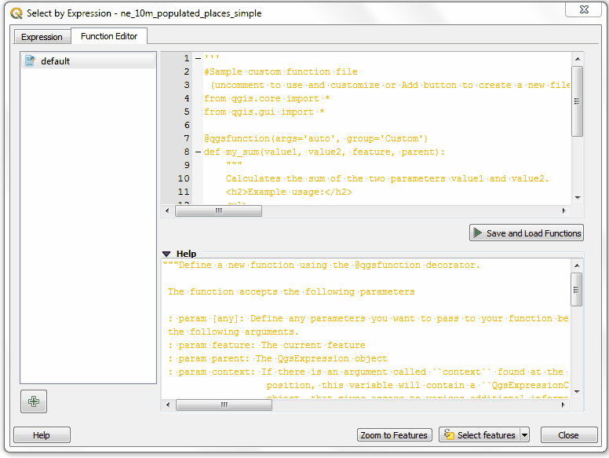
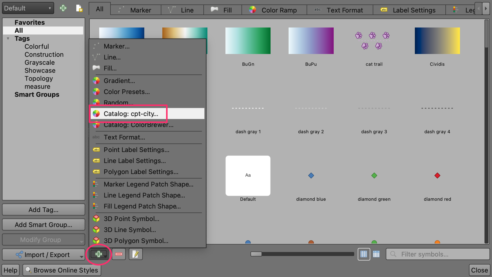
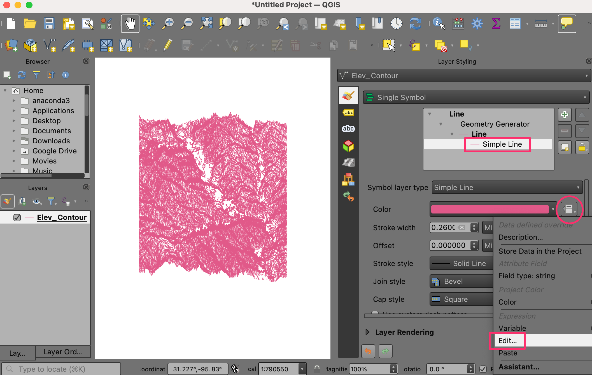
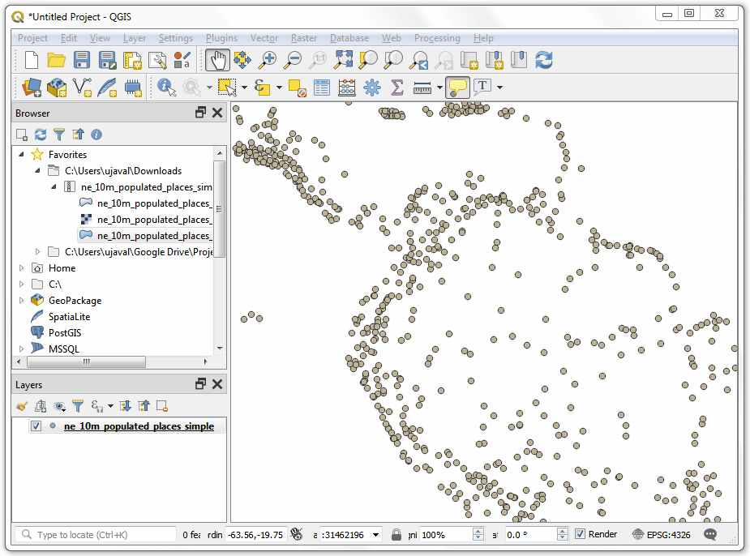

Usando Funciones de Expresión Python Personalizadas (QGIS3)¶
Las expresiones en QGIS tiene bastante poder y son usadas en varias funcionalidades centrales: selección, cálculo de valores de campo, estilo, etiquetado, etc. QGIS también tiene soporte para expresiones definidas por el usuario. Con un poco de programación python, puedes definir tus propias funciones que pueden ser usadas dentro del motor de expresión.
Vista general de la tarea¶
Definiremos una función personalizada que encuentra el número de zona UTM de una entidad de mapa y usaremos esta función para escribir un expresión que muestra la zona UTM como una nota de mapa cuando se pasa por encima del punto.
Otras habilidades que aprenderá¶
Como usar la herramienta
Notas de Mapapara mostrar texto personalizado cuando se pasa por encima de una entidad.
Obtener los datos¶
Usaremos el conjunto de datos Lugares Poblados de Natural Earth. Descargue el conjunto de datos simple (menos columnas)
Procedimiento¶
Ubique el archivo
ne_10m_populated_places_simple.zipen el Navegador QGIS y expándalo. Seleccione el archivone_10m_populated_places_simple.shpy arrástrelo a la pantalla.

Vaya a o clic en el botón Seleccionar entidades usando una expresión en la Barra de Herramientas Atributos.

En el diálogo Seleccionar por Expresión, cambie a la pestaña Editor de Función. Aquí podrás escribir cualquier código PyQGIS que será ejecutado por el motor de expresión.

Definiremos una función personalizada llamada
GetUtmZoneque calculará el número de zona UTM para cada objeto espacial. Debido a que las funciones personalizadas en QGIS trabajan a nivel de objeto espacial. Usaremos el centroide de la geometría del objeto espacial y calcularemos la Zona UTM a partir de la latitud y longitud de la geometría del centroide. También agregaremos una designación “N” o “S” a la zona para indicar si la zona está en el hemisferio norte o sur. Presione el botón + abajo a la izquierda de la pantalla y escribautm_zones.pycomo el nombre de archivo. Puedes hacer clic en el Help en el panel de abajo para cerrar y expandir el panel de código.

Las Zonas UTM son una proyección longitudinal numerada de 1 a 60. Cada zona UTM tiene un ancho de 6 grados. Aquí usaremos una fórmula matemática para encontrar la zona apropiada para un valor dado de longitud. Esta fórmula funciona para todas excepto una pocas zonas UTM especiales. Escriba el siguiente código en la ventana del editor. Cuando haya terminado, clic en Guardar y Cargar Funciones.
import math from qgis.core import * from qgis.gui import * @qgsfunction(args=0, group='Custom', usesgeometry=True) def GetUtmZone(value1, feature, parent): """Return the UTM Zone of the feature's geometry as a String""" centroid = feature.geometry() longitude = centroid.asPoint().x() latitude = centroid.asPoint().y() zone_number = math.floor(((longitude + 180) / 6) % 60) + 1 if latitude >= 0: zone_letter = 'N' else: zone_letter = 'S' return '%d%s' % (int(zone_number), zone_letter)
Nota
Actualmente no hay manera de borrar un archivo de expresión desde el IGU. Si desea borrar el archivo utm_zone.py, puede ir a y borrar el archivo desde .
Cambie a la pestaña Expresión en el diálogo Seleccionar por expresión. Encuentre y expanda el grupo Personalizado en la sección Funciones. Notará una nueva función personalizada
GetUtmZoneen la lista. Ahora podemos usar esta función en las expresiones justo como cualquier otra función. Escriba la siguiente expresión en el editor. Esta expresión seleccionará todos los puntos que caen en la Zona UTM33N. Clic Acercamiento a Entidades y el mapa cambiará, si hace clic en Seleccionar Entidades debería ver cambiar los puntos en la zona UTM 33N a amarillo.GetUtmZone() = '33N'

Nota
Debido a un error, esta funcionalidad no trabajaba en versiones previas a QGIS3. Ha sido corregida desde la versión 3.4.5 en adelante.
De vuelta en la ventana principal QGIS, debería ver algunos puntos resaltados en amarillo. Estos son puntos que caen en la Zona UTM que especificamos en la expresión.

Usted vio como definimos y usamos una función para seleccionar objetos espaciales por expresión. Ahora usaremos la misma función en otro contexto. Una de las gemas escondidas en QGIS es la herramienta Aviso de Mapa. Esta herramienta muestra texto definido por el usuario cuando pasas por encima de un objeto espacial. Clic-derecho en la capa
ne_10m_populated_places_simpley seleccione Propiedades.
Cambie a la pestaña Despliegue. Aquí puede ingresar cualquier texto que será mostrado cuando pase por encima de las entidades de la capa. Aún mejor, puede usar los valores o expresiones de un campo de la capa para definir un mensaje mucho más útil. Clic sobre el botón Ɛ.

Verá de nuevo el familiar editor de expresión. Usaremos la función
concatpara unir el valor del camponamey el resultado de nuestra funciónGetUtmZone. Ingrese la siguiente expresión y clic Aceptar.concat("name",' | UTM Zone: ', GetUtmZone())

Verá la expresión ingresada como el valor del texto Despliegue. Clic en Insert para agregarlo a la caja HTML y luego presiona Aceptar.

Antes que procedamos, deseleccionemos los objetos espaciales que fueron seleccionados en el paso previo. Vaya a o clic al botón Deseleccionar Entidades de Todas las Capas en la Barra de Herramientas de Atributo.
Active la herramienta
Avisos de Mapayendo a o haciendo clic en el botón Mostrar Avisos de Mapa en la Barra de Herramientas de Atributos.
Acérquese a cualquier área del mapa y ponga el cursor del ratón sobre cualquier entidad. Verá el nombre de la ciudad y la zona UTM correspondiente mostradas como el aviso del mapa.

If you want to give feedback or share your experience with this tutorial, please comment below. (requires GitHub account)